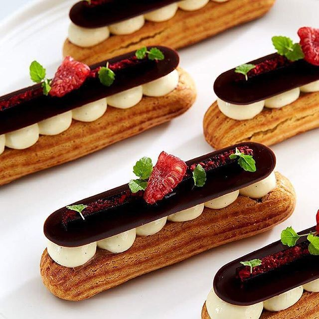

Eclairs

Description
Eclairs are a classic french desert that are made with the same dough as other puff pastries. Here's
a detailed recipe to the fluffiest eclairs that are filled with delicious pastry cream.
The eclairs
shell is made with light-as-air choux pastry stuffed with vanilla bean pastry cream and then topped with a butter cream and a shiney chocolate cutout.
Ingredients
- 150g flour
- 1 tsp sugar
- 100g butter
- 130g milk
- 4 room temperature eggs
For the custard filling
- 300ml milk
- 50g sugar
- 2 egg yolks
- 1 tsp vanilla extract
- 4 tsp plain flour
- 4 tsp corn flour
- 300 ml double cream
Steps
- Step 1
Start by making the custard filling. Heat the milk until almost boiling in a saucepan. Meanwhile, mix together the sugar, egg yolks and vanilla in a bowl, then stir in the flours, a couple of tsp at a time, to a smooth paste.
- Step 2
Gradually whisk in the hot milk, pour everything back into the saucepan and cook over a high heat, stirring constantly, for about 5 mins until thick it will go alarmingly lumpy but don't worry, just keep stirring it vigorously with a wooden spoon until smooth.
- Step 3
Lay a sheet of cling film directly on the custard surface, then cool and chill until you're ready to fill the buns.
- Step 4
To make the choux buns, heat oven to 220C/200C fan/gas 7. Sift the flour with the sugar and a pinch of salt into a small bowl. Put the milk and butter into a medium saucepan with 125ml water and gently heat so the butter melts but the liquid doesn't bubble.
- Step 5
Once the butter has completely melted, increase the heat until the liquid comes to a fast rolling boil. Immediately turn off the heat, tip in the sifted flour and beat vigorously with a wooden spoon until you a have a smooth dough that comes away from the sides of the pan. Spread over a large dinner plate to cool to hand temperature.
- Step 6
Allow to cool for a few minutes, then gradually add the eggs, mixing well between each addition until the mixture reluctantly drops off the spoon. Don't add all the egg unless you need to.
- Step 7
Cut 2 large sheets of baking parchment. On each one draw 2 sets of track lines with a 10cm gap these will be your guidelines so your eclairs will all be roughly the same size. Use the paper to line 2 large baking sheets penside down.
- Step 8
Spoon your choux mixture into a piping bag with a 1cm star or round wide nozzle, or into a disposable piping bag with a similar-size hole snipped off for piping. Pipe 2 rows of well-spaced, squashed 'S' shapes on each sheet between the guidelines. Bake, one tray at a time, on a high-ish shelf for 25 mins, reducing temperature to 200C/180C fan/ gas 6 as soon as they go in the oven.
- Step 9
After 25 mins, poke a hole in the end of each bun, or using a small serrated knife, split down the middle and return to the oven, upside-down, to dry out for 5 mins until crisp and golden. Set aside to cool.
- Step 10
While the buns are cooling, finish your filling. Whisk the cream until thick, then use your electric whisk to beat the cooled, set custard until just smooth again. Fold in the cream. Spoon your filling into a piping bag - use a small nozzle if you're filling the buns through the holes you've pierced, or a large nozzle if you've split the buns in half. Carefully pipe the custard into each cooled bun they should feel heavy once full.
- Step 11
Arrange the buns on a wire rack and pipe a store-bought ready made buttercream or this delicious Home-made alternative